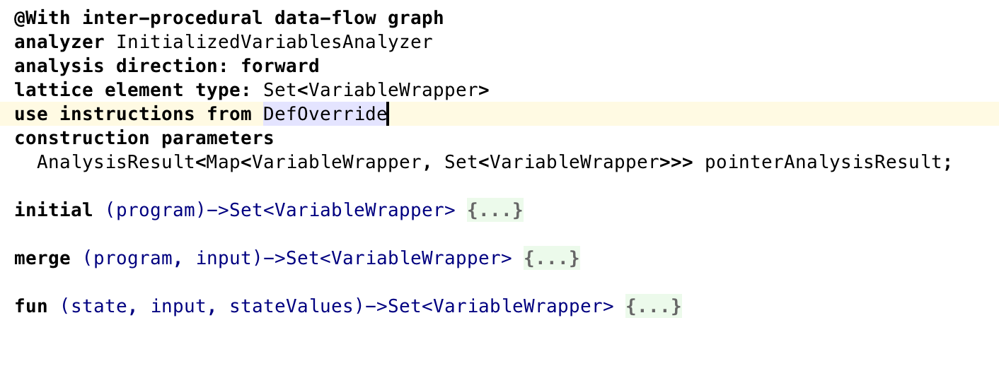
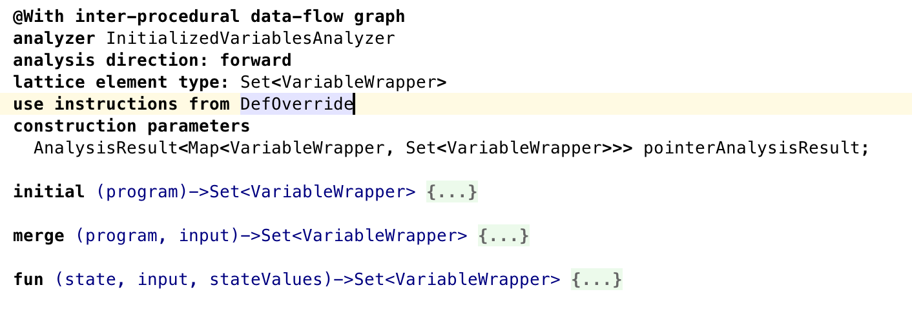

MPS-DF is a tool for data-flow analyses of programs designed in MPS. It provides the DSL for building the data-flow graph of a program, DSL for defining the data-flow analyses and the API for evaluating the analyses and obtaining it's result.
Additionally it provides the visualization tool for data-flow graph with the possibility to trace from data-flow graph nodes to program AST nodes.
2 - Getting Started
- MPS
The MPS-DF comes as a built-in aspect of defining language in MPS. To get started you can just download MPS MPS 3.3.4
and start designing the language. You can find the guide for MPShere
Alternatively you can check out MPS source code from GitHub and play around with existing language with data-flow aspect defined.
The most complete example is data-flow aspect of baseLanguage which is MPS implementations of Java.
To create data-flow aspect of your language you need to right-click on the language, and choose New->DataFlow Aspect.
- Mbeddr for case studies
For case studies you will need to download and install
mbeddr which is set of integrated languages for embedded software development also built on top of MPS.
Clone mbeddr https://github.com/mbeddr/mbeddr.core.git and checkout the feature/contextsensitive branch of the repository (is that true way?).
Whenever you need to find a file in MPS simply press CMD/CTRL + N and type in the name of the file you are looking for, then hit ENTER.
3 - Case studies
Case study 1 - Inter-procedural Initialized Variables Analyses
Initialized variable analyses finds variables that are not initialized in the moment of reading and lets the corresponding checking rule highlight them as errors.
We define its lattice as set< node< Var> > and it encodes the set of definitely initialized variables at a program point.
The forward direction specifies that the analyses traversing of the program starts at the first instruction
The fun function builds the set of variables for every node in the DFG.
When fun encounters a write instruction in the DFG, it adds the written variable to the set because that variable is now definitely initialized.
The merge function uses intersection for this particular analysis, because we build a must analysis which considers a variable initialized only if it is initialized on all incoming execution paths.
You can find the it's declaration in "InitializedVariablesAnalyzer" root in com.mbeddr.core.modules.dataFlow model
 

Case study 2 - Intra-procedural Nullable Analyses
Nullable analyses finds variables that could be null at the point they should not be, i.e at the method call.
We define its lattice as map< node, NullableState> and it encodes the state of each variable on each program point.
Nullable state can be one of the follows: NOTNULL, NULL, NULLABLE, UNKNOWN, NOT_INIT.
NOTNULL - means that variable is definitely not null at this program point.
NULL - definitely null.
NULLABLE - variable can be null.
UNKNOWN - no definite information could be told.
NOT_INIT - variable is not initialized.
Analyzses uses three custom instructions: nullable, notNull and null with the parameter of expression.
nullable is inserted to the graph i.e. when variable is annotated with the @Nullable annotation.
notNull is inserted i.e. if variable is annotated with the @NotNull annotation or the variable is assigned to the definitely not null expression.
null is inserted when the variable is assigned to null.
This Analyses is also forward.
You can find the it's declaration in "NullableAnalyzer" root in com.mbeddr.core.modules.dataFlow model
5 - Evaluation
The common case for evaluating the data-flow analysis is checking the program and highlighting the errors.
In MPS it is done in checking rules of
typesystem.
MPS provides the API for evaluating either common analysis i.e.uninitialized reads, unreachable instructions and unused assignments or custom analyses.
The common analysis could be evaluaated via building the program with MPSProgramBuilder.buildProgram() method and passing the result to the util class DataFlow.
The example could be found at "check_UninitializedLocalField" rule.
The custom analyses can be evaluate with the special construction "analyzerRunner". To use this construction you need to import language jetbrains.mps.lang.dataDlow.analyzers